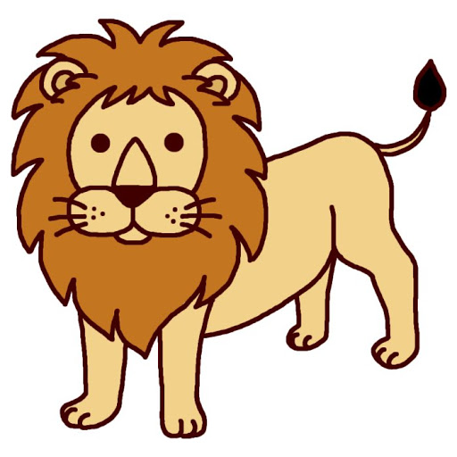

学名：Elephas maximus indicus 概要： 現存するアジアゾウ4亜種のうちの一つ。牙は雌雄共にあります。森林に棲み、普通、雌は10～20頭の母系家族群をつくって、雄は単独か数頭で行動します。成獣は一日に100kg以上の木や草を食べると言われています。インドではゾウは現在でも荷役動物として、また様々な儀式において、人々と深くかかわっています。しかし、近年野生ゾウの生息環境の破壊により、人間と生息域が重なる地域が増加しています。このためゾウによる農地荒らし、死傷事故などが年々深刻化しています。
インドライオン
シシオくん

解説▼
学名：Panthera leo persica 概要： インドにすむライオンの亜種で、アフリカのライオンと比べると、やや小柄で概してたてがみが短く尻尾の房毛が長いと言われています。また、下腹部にひだ状の皮膚のたるみがあることも違いの一つといわれています。昆虫類からハ虫類、大型草食獣まで様々なものを食べます。かつては中近東からインドにかけて広く分布していましたが、狩猟や開発による生息域の破壊によって、現在はインドのギル森林保護区を中心に数百頭が残されているだけになってしまいました。